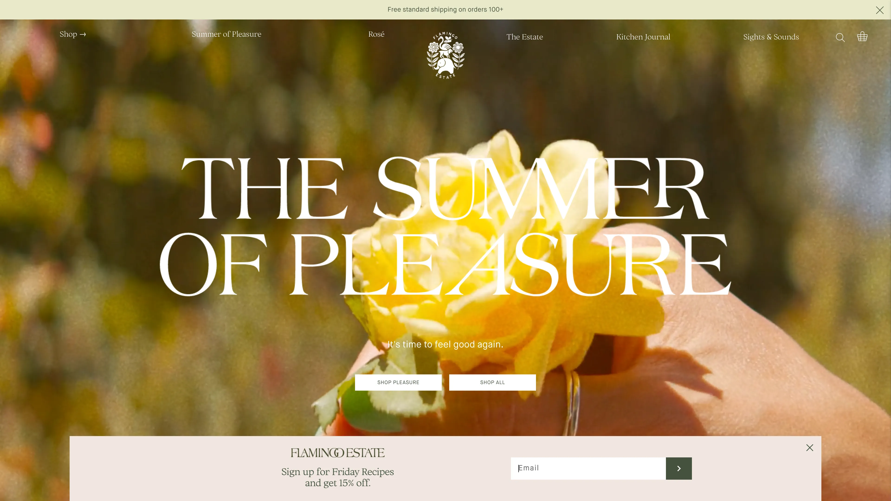
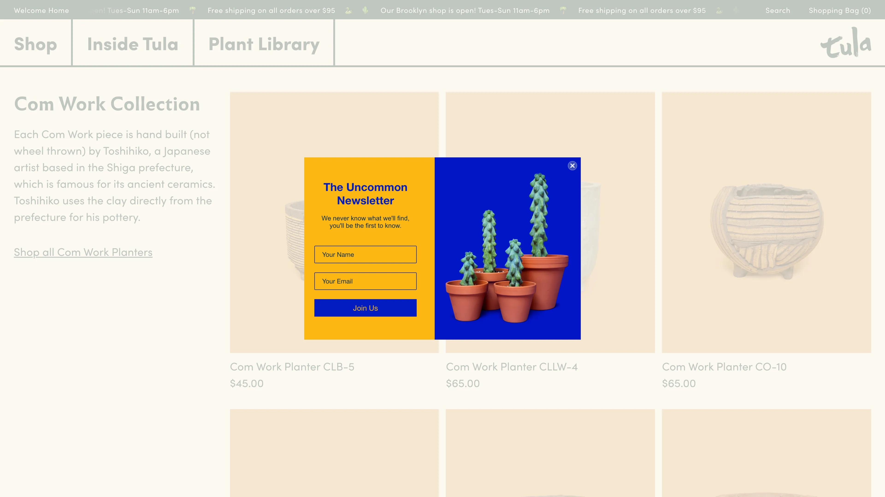
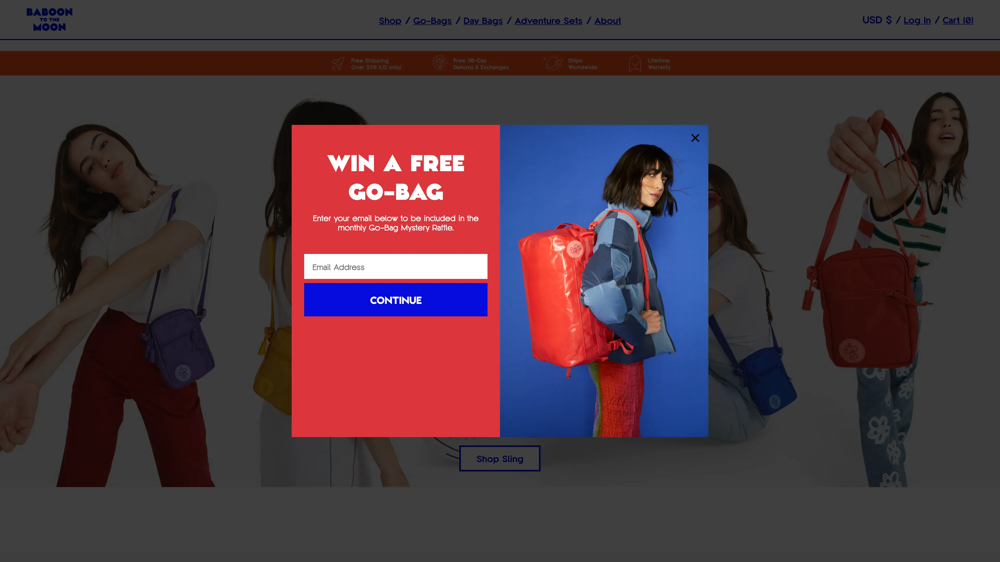
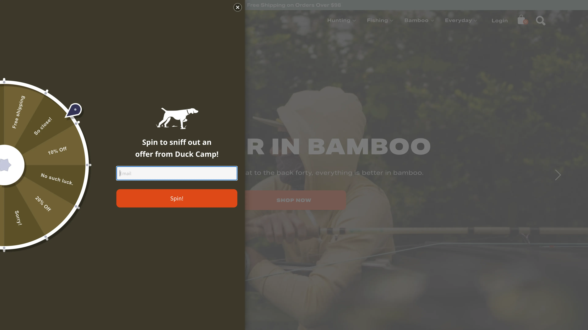
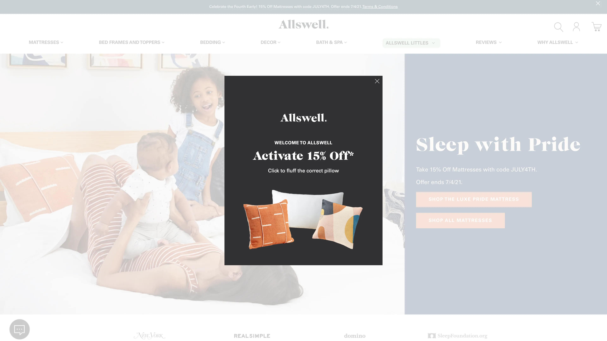
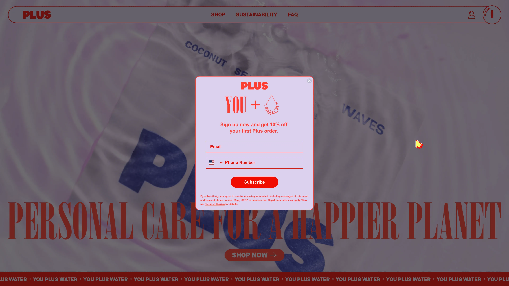

Matt Helbig: What's up, Email Geeks? Welcome back to another episode of Feedback Friday. This week we have Olivia from Justuno, how's it going?
Olivia Stapp: It is going wonderful. How are you doing?
Matt Helbig: Very good, excited for some Fourth of July festivities this weekend, but first some amazing pop-up examples.
Olivia Stapp: To introduce myself, I am Olivia Stapp. I've been with Justuno for about four years. I manage our customer success and strategy department so I look at a lot of pop-ups. I know the best practices and I've been doing this for a long time.
Matt Helbig: For people maybe not familiar, what are email pop-ups? How do you use them? How do you put them on your site?
Olivia Stapp: There are so many ways. One of the biggest ways, the number one thing, is email capture and lead capture. All marketers know how valuable an email lead can be, and that is Justuno’s bread and butter, what you would initially know us for. Then, on top of that, we do a lot of other things, including exit intent, trying to save those cart abandoners.
We also have a lot of different gamification features. There are so many different opportunities to use Justuno promotions on your website to help increase your ROI, to help your conversions, and to gather more leads. It is a very dynamic tool.
Matt Helbig: Yeah, I feel that email captures have been around for a while but we're still seeing marketers experiment with the format and try new interactive components; how they show up or when they show up, and what kind of information you're displaying. It's always interesting to see different brands trying out new stuff.
Olivia Stapp: We're constantly seeing new and innovative ideas, especially with SMS capture coming into the world as well. However, different appearances, like you said those gamifications, such as spin-to-wins, things like that. Not only making the email capture valuable to the customer because they're often getting a discount but making it fun to interact with as well.
Matt Helbig: Yeah, I feel like people think they're a bit annoying, but I still think they work, closing a sale or capturing an email address, they’re still a very effective tool to make that happen on a page.
Olivia Stapp: They are. Today, what we often say when people are worried about the annoying factor is the rules. The rules are a big thing, making sure that we're displaying things to people at appropriate times and not overwhelming them. That will make that field less annoying. I know often when I go to a site I look for them now because if I'm going to go and I'm already set on making a purchase, then I want my discount.
Matt Helbig: Exactly. Justuno put together this awesome resource called popupexamples.com, featuring a lot of the pop-ups. I think we talked about some of the more common examples like capturing an email address and giving someone an offer. Are there any other unique ways people might be using these?
Olivia Stapp: There are so many unique ways. We have people using promotions on mobile devices to mimic a mobile menu, which is just a bottom promotion bar with some icons on it. It makes things a little bit easier to navigate in the mobile format.
One of the fun things I'm seeing a lot of clients do now is a post-purchase SMS capture. They’re having really good luck with expanding capture from just the standard, fire it when somebody is new, and just landing on the site, situation.
Matt Helbig: Yeah, it seems like there are a lot of little variables you can play around with when you're asking them and when you're showing them. Plus, there are also opportunities to A/B test these forms and ask where in that sales-customer cycle you want to ask for some of that information.
Olivia Stapp: Exactly and A/B testing is one of the powerhouses of Justuno. Nobody knows your audience like you know your audience, and so the best thing is testing things that have worked. Everything from testing imagery, to a lifestyle image on the promotion, to different copy, to different offers; it's all about finding what works best for your audience.
Matt Helbig: There are a couple of different brands that we saw that had pop-ups in the wild and I thought we could feature them and talk through some of the good and bad parts of them.
Olivia Stapp: Yeah, that sounds great.
This specific promotion is very, very unique, but it works in a lot of ways because of its uniqueness. With welcome captures people often, and I know we just touched on it, but people can think they're annoying.

For a lot of brands that have a very clean, upscale aesthetic, like the one we're seeing here, a full-page center promotion may not be the best bet. However, we always do want to know in circumstances like this, that, with a lead capture being this bottom bar instead of a center main promotion, there is a very strong chance of seeing a reduction in engagement rate. So, in that lead capture, you will sacrifice a little bit there, but that's always something worth testing.
You can A/B test a banner capture versus a full-size capture to see which one your audience is responding to best. Sometimes people find the quality of leads, when they do something a little bit more like this, tends to be a little bit better because it's attracting people that want to engage.
Matt Helbig: Yeah, I like this one. I picked this one out because it seemed like less in your face while still using a lot of the colors from the brand. It seemed pretty straightforward. I do agree that if you would have put it front and center, you might get more engagement, but I think this is a good placement for a brand that wants to let you know that they have an email list you can sign up for, but isn't overly aggressive with it, or right in the front.
Olivia Stapp: Yeah, I love this. This is a great way to, as I said, be cautious of being too overwhelming, but also still making sure it's kind of out there.
This is a great example of something that stands out, that's fun looking, it's unique, but it doesn't have an offer. They are not offering you a discount percentage or anything. They're just saying, if you love us, you want to get to know us, then sign up for us.

Some feedback that I would give them on this is, collecting and asking for your name. This is another one where a lot of people use customization in emails, and so they do want to have that name in there as well. However, once again, for every additional field, you're asking for, you're going to reduce your engagement rate. You think about people and people very often will think that it’s a little bit too much effort.
There are always other things you can offer in your copy and I think that this brand has a lot of opportunities to test copy. They could make it a little bit more of an exclusive discount. For example, they have discounts and could send, “know when our sales are coming”. Having that exciting language to get on the newsletter when you're not offering a discount is helpful.
Matt Helbig: Yeah I agree. I think with email captures, I like to set expectations clearly when you offer a form like this so people know what they're signing up for. I think a lot of people are used to signing up just to get a discount, but if it is something like a newsletter, even letting them know what day they can expect it or if it’s going to be a daily email. It's good to have some of that stuff be a little bit more upfront.
Olivia Stapp: That brings up a good point as well; being really, really clear and honest with your audience about what you're offering. Making your language as clear to read and as simple as possible, is a definite best practice and one that they accomplish well on this promotion.
Matt Helbig: Pushing some of these additional fields out maybe until the next page or even, I think what we do is sometimes we'll do a follow-up email and say like, “could you let us know some more information about you”, after opt-in. Especially, when some of these brands aren't even going to use your name all the time, sometimes you capture fields just to capture them, and your marketing team doesn't end up using them anyway so you might as well reduce the number of fields that you're including.
Olivia Stapp: Let's take a look at some exit offers. I want to make sure we can get through all our different fun ones here. This one is super simple, but it fits with the website. It's not too jarring because it's not out of place. It's very, very simple, “there's still enough time for 15% off”. The 15% off is just an overall sitewide event, as you can see from the banner up top, so we can get that context. Reminding somebody of that big sale like, “Hey don't forget”, we already gave you this in the banner, but here's that second reminder. Also, that countdown timer that they have in the banner, it is awesome to see those.

Matt Helbig: I like the design of this, it matches the website style, having rounded corners on this pop-up. Yeah, this caught my eye when I was exiting the site. It brought me back in to say, “okay, well I can finish this purchase”. It almost creates this FOMO thing of like well, I have this discount, I almost have to use it.
Olivia Stapp: Yeah it's like, well what if I don't have that later?
Matt Helbig: Exactly, I think they do a great job adding some urgency and adding a little bit of FOMO there to get you to keep browsing or make that sale.
Olivia Stapp: I usually very much tend to veer and veer my clients away from a lead capture and an exit promotion. The person is already on their way out the door, we are adding in an additional step, so we see a lot lower engagement rates with those, where the purpose of these promotions is to retain them there. Then, instead of doing the “Leaving so soon? $15 off your first order of $150”, doing something of “Leaving so soon? Here's $15 off when you purchase $150”. We're just giving it to them because with the purchase, we have another opportunity of obtaining the email address. The extra step of entering the email could potentially detract people from taking the offer up.
Matt Helbig: Yeah, did you have any insights on making someone go to the welcome email to get that coupon code, or would you recommend showing it right away on the site?
Olivia Stapp: Right away on the site. We want to make it as easy as possible for those people. When we use the version of, not displaying it on-site and using it for email, that's for people who are getting a lot of spam or throwaway emails. You can use things like BriteVerify and different things like that to validate emails on the site as well.
Oh, I love this.
Matt Helbig: I thought it was interesting where they really weren't asking for anything and maybe that's because they know that I already opt into these emails, but I just thought some fun CTA copy like “wow, thanks” and letting you know that you might get something added to your order, plus a discount, is a cool way to give a very time-sensitive offer on the page rather than something more generic.
Olivia Stapp: Yeah, this is definitely something that you could almost use as an exit promotion. When somebody doesn't have anything in their cart yet, this is that extra, “Hey, how about these additional things and this additional discount”, and it fits. It is so on brand. I cannot get over how on-brand this is and I love it.
This is a really good example of an alternative to a discount, doing a raffle win situation or entering to win something. It's a really good incentive for people to sign up. You get engaged audiences from it. A really large client I've worked with for a while, Pendleton, actually the blanket company, was regularly doing giveaways and had massive success with their lead captures.

Yes, gamification is phenomenal. It is very good for upping that email lead list size. It’s one of those situations where you do have to be careful of people who are putting in emails to spin the wheel, but it does increase your lead capture rate, typically by multiple percent.

This is really simple, it's from the side. One thing I would recommend on this promotion design-wise, and every promotion actually, is adding an additional close button underneath the spin button, only because we don't want to interfere with the experience. We've decided to play something in the way and we want to make sure it's as easy as possible so it doesn't interfere if they are on a conversion pathway essentially. It’s really simple. It's on-brand and I enjoy the copy on this. I really love when people have fun to brand copy, making things look on brand and making your language speak to your audience is so important.
Matt Helbig: I've never used one of these, but I've heard a lot of people talk about them and I’ve seen them on other sites. It’s definitely something to test and you see that lift, but I think this brings a fun and interactive element towards just a regular opt-in. It makes you feel like, again, maybe some FOMO that you won something or something like that. It brings that interaction of opting in a little bit more exciting.
I found this one to be cool and I haven't seen anything like it before.

Olivia Stapp: This is what we would call pick a prize. It's a template we offer now, it's a plugin we offer now that we just built out. You can do something similar where you can upload images, and one of them will be the winner. With these, always, it's making sure we're getting them in front of people at the correct timing, not just putting something like this on landing. We suggest delaying it a bit so people have a chance to settle into your site before. This also assures that anybody who accidentally closes that out doesn't do that as well.
This has a lot of opportunities for testing. For some brands, when you look at things like this, it is really simple, and for some brands that works well. For some brands simple is the best option, especially depending on your audience. They have a lot of opportunities to test, and even testing a welcome screen, that would be adding in a screen ahead of it that just says, “Hey, would you like a discount today?”, a yes or no, or “how about opting-in”, something like that. That leading language has a really good impact on positive engagements.
Matt Helbig: This is very simple, you don’t have to read too much on what you need to do, but I think there might be opportunities too, after you receive that email, on that confirmation slide on this page. I would be interested to see what that looks like if they give you your code here, or say, “share this”, or a referral or something. I feel like that confirmation is a second chance, there's a lot of opportunities to try out new things. I know we've tried out a social share.
Olivia Stapp: Yeah, we just had a request for that and I have a client who's now asking for Facebook likes via their thank you page as well. I think there's a lot of opportunities for those thank you pages and they're now starting to be a little bit more utilized rather than being an afterthought like you just said.
Matt Helbig: Alright, for this last example, they're asking for the double opt-in, both email and phone number.

Olivia Stapp: Love it, I’m glad we finally pulled one of these up. I would recommend testing, doing the capture on one page versus splitting out that capture.
Matt Helbig: I agree. I feel like there's some hesitancy when people ask me my phone number right away. I think we've said in a previous episode when you get someone's phone number, it's like they’re a super fan. So, sometimes, asking for that right up front when I don't know a lot about your brand is a lot for me to give you my phone number, just to get 10% off something. I know some people only have an SMS strategy and they don't even use email in the same way. I mean if you had to recommend email versus phone number if you only could pick one, which one would you pick?
Olivia Stapp: I would say email on desktop and mobile on mobile.
Matt Helbig: Oh, interesting, I like that strategy.
Olivia Stapp: Yeah that's usually my strategy, it's worked out well for a lot of my clients. They're not sacrificing anything it feels like because they have a very valuable email.
Matt Helbig: I'm sure we gave people a lot of examples to walk through and I'm excited to see what people try out. I see pop-ups sticking around on the web for a minute because they continue to work pretty well.
Olivia Stapp: They are not going away anytime soon and they’re really helpful in a lot of ways. Justuno is a super powerful tool and there are a lot of really unique and fun ways to utilize the tool as well.
Matt Helbig: Great, well thanks so much for taking the time. I appreciate you jumping on here and Justuno has a lot of good resources as well so check them out.
Olivia Stapp: Have a good one.